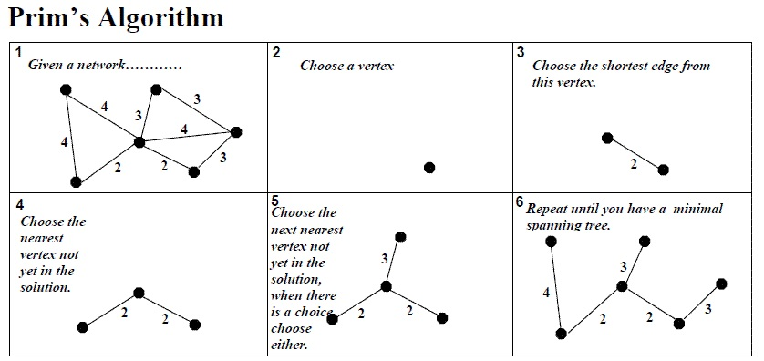

- Step
- Select a starting vertex
- Repeat Steps 3 and 4 until there are fringe vertices
- Select an edge e connecting the tree vertex and fringe vertex that has minimum weight
- Add the selected edge and the vertex to the minimum spanning tree T
- Exit

Kruscal Algorithm
- Step
- Remove all loops and Parallel Edges
- Arrange all edges in their increasing order of weight
- Add the edge which has the least weightage
- Exit